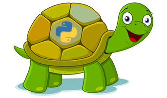
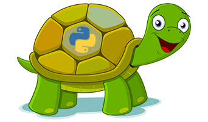
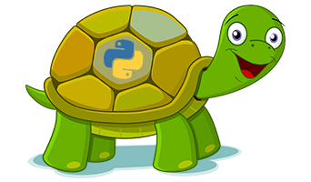

Tools Used
 


This is a project made for fun using python.
It uses the turtle module to draw random shapes and text.
User Controls:
- Number of shapes to draw.
- Number of random colors.
- Size of the shapes.
- Speed of the animation.
- Text to draw.
- Screen boundaries.
- Background color.
- Reset drawing.
- Dark mode.
View
Source Code
